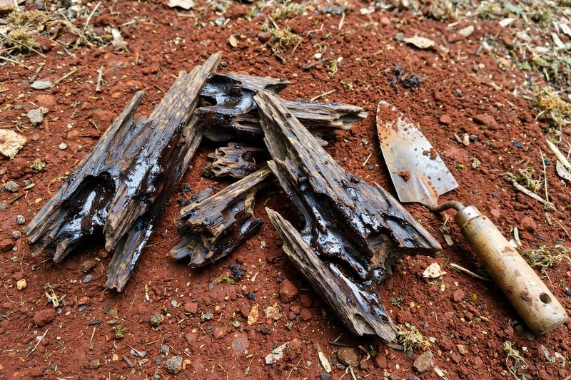

富森是越南中部的一个地区，以红土著称。沉香树倒下后埋进红土，经过雨水、微生物和土壤矿物质的长期作用，木质纤维慢慢分解，油脂部分保留下来，形成红土沉香。
这个过程需要很多年，而且不是每块埋进土里的料都能成材。土质、湿度、埋藏时间，缺一不可。所以红土料的存量一直很少。
富森红土的香韵以醇厚、甜凉为主，带一点土质的沉稳感。室温下香味沉稳，上炉后层次丰富，前调甜、尾调醇，留香时间长。
和芽庄的清甜凉意比，富森红土更厚重、更沉稳。喜欢清雅的人可能觉得它太浓，喜欢醇厚的人会觉得它刚刚好。风格不同，没有高低。
土沉是树倒了埋进土里形成的，香韵醇厚甜凉，带土质的沉稳感。倒架是树倒了之后在地面自然醇化，香韵干净清甜。水沉是从水里打捞或在水边形成的，香韵清凉。三种方式没有高低，只有风格不同。
买之前问清楚形成方式，商家应该说得清。说不清形成方式、只会说“老料”的，先别买。形成方式和价格有关，含糊其辞往往是为了抬价。
一是存量少：形成条件苛刻，能成材的料不多。二是时间长：埋藏需要很多年，等不起。三是香韵独特：醇厚甜凉的风格在惠安系里比较少见，喜欢的人愿意为它付钱。
价格跨度同样很大。普通的红土碎料和顶级的老红土料，价格能差很多倍。不要只看“红土”两个字就下结论，要看具体的油脂、香韵和品相。
红土料的颜色是土壤作用形成的，红褐色自然，深浅不一，颜色长在木质里。染色的料颜色浮在表面，发死，没有过渡，酒精棉片轻擦会沾色。
闻香也能辅助判断：红土料的香韵醇厚甜凉，有层次；染色料往往香味单一，或者带化学味。最终还是要看成分检测和溯源。
第一，问清楚是土沉还是其他。土沉、倒架、水沉是不同的形成方式，价格和香韵都不一样，商家应该说得清。
第二，价格明显低于行情的“红土”，要警惕染色冒充。红土料存量少，捡漏的概率很低。
第三，亲自闻。醇厚甜凉是招牌，闻着发闷、发冲、带化学味的，先别买。
| 看什么 | 富森红土常见表现 |
|---|---|
| 形成 | 埋藏红土多年，木质腐去、油脂保留 |
| 香韵 | 醇厚甜凉，带土质的沉稳感 |
| 颜色 | 红褐自然，深浅不一，颜色长在木质里 |
| 价格 | 存量少，价格高，跨度大 |
| 适合 | 喜欢醇厚香韵、追求层次的人 |